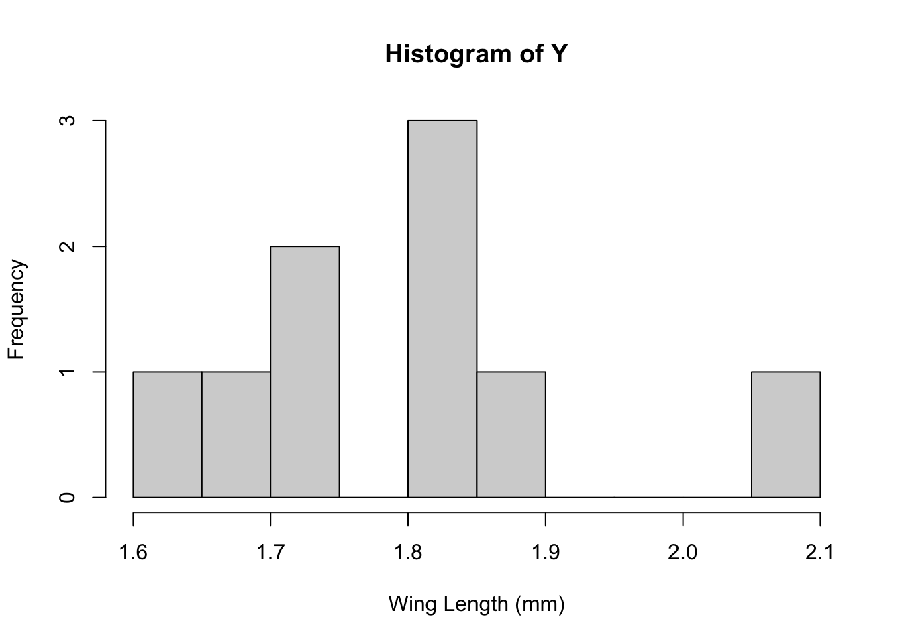
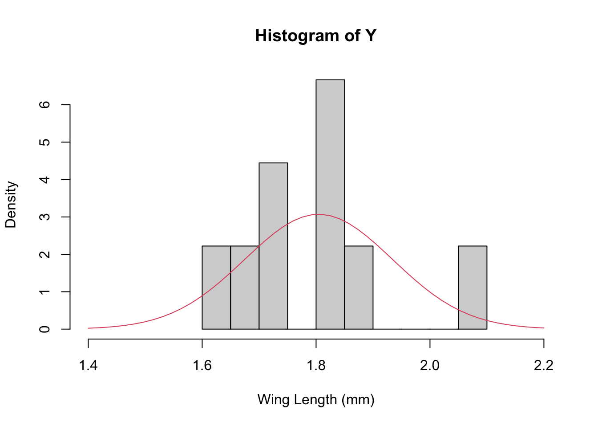
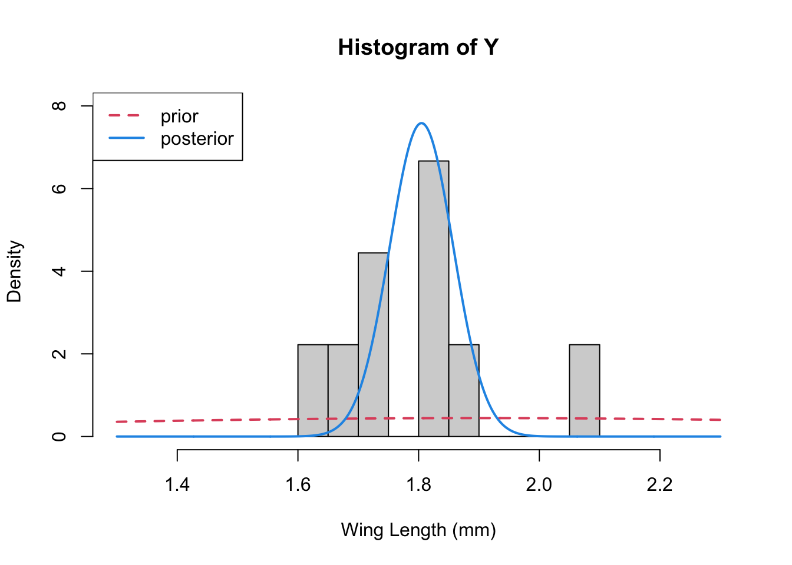

# Load data
WL.data <- read.csv("MidgeWingLength.csv")
Y <- WL.data$WingLength
n <- length(Y)
hist(Y,breaks=10,xlab="Wing Length (mm)") 
Activity: Exact Bayesian analysis
This section is focused on practicing the basics of Bayesian analysis (focusing on analytic practice) for simple unimodal data. This section assumes that you have seen the Bayesian Basics Lecture.
We will use this simple example to go through the steps of assessing a Bayesian model and we’ll see that MCMC can allow us to approximate the posterior distribution.
Grogan and Wirth (1981) provide data on the wing length (in millimeters) of nine members of a species of midge (small, two-winged flies).
From these measurements we wish to make inference about the population mean \mu.
We might expect that these midge data could be draws from a Normal distribution \mathcal{N}(\mu, \sigma^2). Recall that the MLEs for \mu and \sigma^2 here are simply the sample mean and sample variance respectively:
x<-seq(1.4,2.2, length=50)
hist(Y,breaks=10,xlab="Wing Length (mm)", xlim=c(1.4, 2.2), freq=FALSE)
lines(x, dnorm(x, mean=m, sd=sqrt(s2)), col=2)
NOTE: I’ve plotted the estimate of the population distribution here, but this is not the predictive distribution (which would be a Student T because we’re estimating both the mean and variance…).
The non-Bayesian version here has the advantage of being quick and familiar. However, from our point of view it has two weaknesses:
Because we have so few data points estimates of the accuracy of our predictions aren’t available. 9 points is only barely enough to estimate a mean, so we don’t trust any of the variance calculations.
We can’t easily incorporate things that we might already know about midges into our analysis.
Let’s see how we can do a similar analysis using a Bayesian approach, here analytically.
We need to define the likelihood and the priors for our Bayesian analysis. Given the analysis that we’ve just done, let’s assume that our data come from a normal distribution with unknown mean, \mu but that we know the variance is \sigma^2 = 0.025. That is: \mathbf{Y} \stackrel{\mathrm{iid}}{\sim} \mathcal{N}(\mu, 0.025^2)
Studies from other populations suggest that wing lengths are usually around 1.9 mm, so we set \mu_0 = 1.9
We also know that lengths must be positive (\mu >0)
We can approximate this restriction with a normal prior distribution for \mu as follows:
Since most of the normal density is within two standard deviations of the mean we choose \tau^2_0 so that
\mu_0 - 2\sigma_0 >0 \Rightarrow \sigma_0 <1.9/2 = 0.95 I will choose \sigma_0=0.8 here. Thus our prior for mu will be: \mu \sim \mathcal{N}(1.9, 0.8^2)
Together, then, our full model is: \begin{align*} \mathbf{Y} & \stackrel{\mathrm{iid}}{\sim} \mathcal{N}(\mu, 0.025^2)\\ \mu &\sim \mathcal{N}(1.9, 0.8^2) \end{align*}
For this very simple case it is easy to write down the posterior distribution (up to some constant). First, note that the likelihood for the data can be written as
\begin{align*} \mathcal{L} &\propto \prod_{i=1}^n \frac{1}{\sigma} \exp\left(-\frac{1}{2\sigma^2}(Y_i-\mu)^2 \right) \\ & = \frac{1}{\sigma^n} \exp\left(-\frac{1}{2\sigma^2}\sum_{i=1}^n (Y_i-\mu)^2 \right)\\ & \propto \exp\left(-\frac{n}{2\sigma^2} (\bar{Y}-\mu)^2 \right) \end{align*}
Multiplying the prior through we get the following for the posterior:
\mathrm{P}(\mu|\mathbf{Y}) \propto \exp \left(-\frac{n}{2\sigma^2} (\bar{Y}-\mu)^2 \right) \exp\left(-\frac{1}{2\sigma_0^2}(\mu-\mu_0)^2 \right)
You can re-arrange, complete the square, etc, to get a new expression that is like
\mathrm{P}(\mu|\mathbf{Y}) \propto \exp \left(-\frac{1}{2\sigma_p^2} (\mu_p-\mu)^2 \right)
where
\begin{align*} \mu_p & = \frac{n\sigma_0^2}{\sigma^2 + n\sigma_0^2} \bar{Y} + \frac{\sigma^2}{\frac{\sigma^2}{n} + \sigma_0^2} \mu_0\\ & \\ \sigma_p^2 & = \left( \frac{n}{\sigma^2} + \frac{1}{\sigma_0^2} \right)^{-1} \end{align*}
Instead of writing this last in terms of the variances, we could instead use precision (the inverse variance) which gives a simpler expression: \tau_p = n\tau + \tau_0
Just like in our earlier example, our estimate of the mean is a weighted average of the data and the prior, with the variance being determined by the data and prior variances.
So lets write a little function to calculate \mu_p and \tau_p and the plug in our numbers
Let’s plot 3 things together – the data histogram, the prior, and the posterior
x<-seq(1.3,2.3, length=1000)
hist(Y,breaks=10,xlab="Wing Length (mm)", xlim=c(1.3, 2.3),
freq=FALSE, ylim=c(0,8))
lines(x, dnorm(x, mean=mu0, sd=sqrt(s20)), col=2, lty=2, lwd=2) ## prior
lines(x, dnorm(x, mean=mp, sd=sqrt(1/tp)), col=4, lwd=2) ## posterior
legend("topleft", legend=c("prior", "posterior"), col=c(2,4), lty=c(2,1), lwd=2)
Change the values of the mean and the variance that you choose for the prior (“hyperparameters”). What does this do to the posterior distribution. E.g., what happens if the variance you choose is small, and \mu_0 =2.5 or so. Is this what you expect?